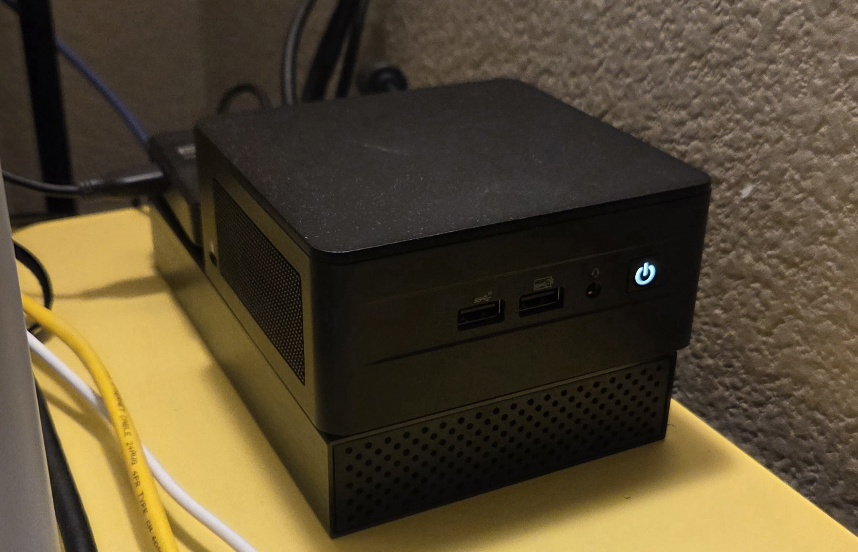

Around 2018, I was introduced to the idea of self hosting through a service called Plex. It's essentially netflix but for your own personal media. Free of charge, you just need to provide a server. I was not going to invest in a whole new computer, so I started with my main computer. I would leave it on any time I wanted to stream my media. This worked fine for several years.
In 2023, I wanted to dive deeper into self hosting and I started to realized I might need a dedicated server. I was really feeling the inconvencience of running services on my main computer. If I was doing heavy downloading, my stream would suffer. If a stream needed to be transcoded, I saw a hit to my gaming performance. In 2024, I got my hands on an old pc (the same one I had originally built in 2016) and decided it was time to migrate my plex server to a dedicated machine. It was old and slow and it was perfect. I started trying out more self hosted services (i.e immich, database for Obsdian). I fell in love with self hosting and started cancelling more and more subscriptions. This was also the point I was able to expand my self hosted services to more people that just myself.
The old pc worked great. I had it in my closet with long ethernet and power cables routed to it. The biggest issue, however, was its size and its age. It was in a case even bigger than my main build, and it was running a i5-6600K, an 11 year old CPU in 2026. 4 cores, 4 threads. This was fine for most tasks but it did start slowing down under a heavy load. I also had a custom service running where I would launch multithreaded processing and the CPU really showed its age here. I would need to process dozens of files, but due to the 4 threads, I could only process 2 files simultaneously. I knew it was time to upgrade and downsize.
After a ton of research and a lot of back and forth, I ultimately decided to buy a used 12th gen Intel Nuc. It has a 4 year old CPU, but it's tiny and has 12 cores/16 threads. Perfect. I have had it for 2 months and absolutely love it. It's way more power effecient than the last build, can run multiple services and process a lot more files simultaneously (I capped it at 10) without a noticeable drop in performance. Previously, I had used Windows 10 for my server and though it was what I was most comfortable with, it had a lot of issues. For this Nuc, I decided to try out Linux and went with the Mint distro. I'm super happy with it. It's easy to use, runs all my services flawlessly, and has never crashed. I use Rustdesk to remote in and use tailscale to access services on my phone when I'm not at home. No complaints. It's been a mostly hands off experience so far and that's been great.
I had the Nuc connected to a 3.5in HDD and an USB HDD. I bought a hard drive enclosure and placed the Nuc and USB hard drive on top of it.

This worked okay but I had concerns about vibrations and heat, especially with the USB HDD right behind the exhaust of the Nuc. Eventually I moved the USB HDD to the front and rotated the Nuc to face the wall, so the light wouldn't be shining towards the bed. This looked pretty ugly and meant the front USB ports were easily accessible.
I found this Nuc server rack model and knew it would be perfect with some changes.
For starters, it was too tall and used a lot of filament. I removed the bottom layer entirely, shortened the first level, and reduced the width all around.
This left me with a nicely fitted enclosure and kept everything seperated.
My Model.
Some possible improvements:
posted on: 04/28/2026